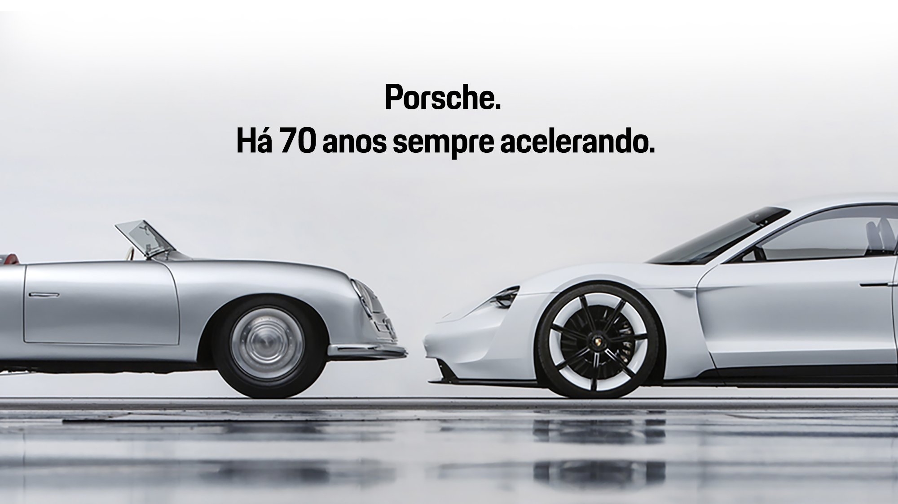
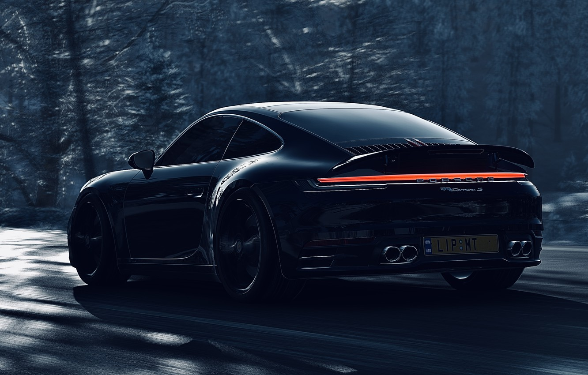

fundador da Porsche
História de Ferdinand Porsche:
Ferdinand Porsche, nascido em 3 de setembro de 1875 em Maffersdorf, na Boêmia (hoje parte da República Tcheca), foi um engenheiro automotivo austríaco e fundador da renomada empresa de automóveis Porsche. Ferdinand Porsche demonstrou habilidades técnicas excepcionais desde jovem e rapidamente se tornou um talentoso engenheiro. Ele trabalhou em várias empresas automotivas de renome durante o início do século XX, desempenhando um papel fundamental no desenvolvimento da indústria automobilística.
Em 1906, Porsche ingressou na empresa austríaca Lohner-Werke, onde projetou o primeiro veículo híbrido do mundo, conhecido como Lohner-Porsche Mixte Hybrid. Esse veículo utilizava motores elétricos nas rodas dianteiras e um motor a gasolina para gerar eletricidade. O projeto inovador de Porsche atraiu atenção global e estabeleceu seu nome como um engenheiro automotivo visionário.
Em 1931, Ferdinand Porsche fundou sua própria empresa de engenharia automotiva, a Porsche GmbH, em Stuttgart, Alemanha. A empresa concentrou-se no design e desenvolvimento de veículos esportivos de alto desempenho. Porsche era conhecido por sua paixão pela excelência técnica e pela busca incessante de inovação.
Durante a Segunda Guerra Mundial, a Porsche GmbH recebeu uma série de contratos do governo alemão para desenvolver veículos militares, incluindo o famoso tanque pesado Tiger. No entanto, após o término da guerra, Ferdinand Porsche foi preso pelas autoridades francesas por colaboração com o regime nazista. Após um período de detenção, ele foi liberado em 1947 devido à sua saúde debilitada.
Apesar dos desafios enfrentados, Ferdinand Porsche manteve seu espírito empreendedor e, em 1948, viu a realização de um de seus maiores sonhos. Seu filho, Ferry Porsche, lançou o primeiro carro esportivo com o nome da família: o Porsche 356. O 356 rapidamente ganhou reputação como um carro ágil, elegante e com excelente desempenho, estabelecendo as bases para o sucesso futuro da empresa.

História da Porsche:
A Porsche, fundada por Ferry Porsche, filho de Ferdinand Porsche, rapidamente se tornou sinônimo de carros esportivos de luxo e desempenho excepcional. O Porsche 356 foi apenas o começo de uma jornada que levaria a empresa a conquistar admiradores e entusiastas ao redor do mundo.
Nos anos seguintes, a Porsche desenvolveu uma série de modelos de destaque, como o lendário Porsche 911, introduzido em 1963. O 911 tornou-se o ícone definitivo da marca, com sua silhueta distintiva e motor traseiro de seis cilindros refrigerado a ar, oferecendo um desempenho espetacular tanto nas ruas quanto nas pistas de corrida.
Ao longo das décadas, a Porsche expandiu sua linha de produtos, introduzindo modelos como o Porsche 924, 944 e 928. No entanto, foi com o lançamento do Porsche Boxster em 1996 que a empresa alcançou um novo patamar. O Boxster, um roadster de dois lugares, foi um sucesso instantâneo, proporcionando uma experiência de direção emocionante e elegante.
A partir dos anos 2000, a Porsche ampliou ainda mais sua gama de modelos, incluindo o Cayenne, seu primeiro SUV, e o Panamera, um sedã de luxo de alto desempenho. Essas adições estratégicas à linha de produtos ajudaram a Porsche a atrair novos clientes e aumentar sua presença global.
Atualmente, a Porsche continua a ser uma referência na indústria automobilística, com uma linha de veículos que combina tradição, inovação e paixão pelo automobilismo. Além disso, a empresa expandiu suas ofertas para incluir veículos elétricos, com o lançamento do Porsche Taycan, um carro esportivo elétrico de alta performance que combina a potência e o estilo distintivo da marca com a sustentabilidade.
A Porsche também se destaca por sua participação nas corridas automobilísticas, tendo conquistado inúmeros títulos e vitórias nas mais prestigiosas competições, como as 24 Horas de Le Mans e a Fórmula E. A herança automobilística e o compromisso com a excelência tornaram a Porsche uma das marcas mais admiradas e desejadas por entusiastas e colecionadores em todo o mundo.

Por que a Porsche se tornou um icone no mundo automotivo??
A Porsche se tornou uma marca automotiva mundialmente reconhecida por sua excelência técnica, qualidade de construção e desempenho excepcional. A empresa criou um legado de carros esportivos icônicos que capturam a imaginação dos entusiastas e apaixonados por automóveis.
Um dos principais pilares do sucesso da Porsche é o seu compromisso com a engenharia de precisão. Cada veículo Porsche é construído com atenção meticulosa aos detalhes, combinando tecnologia avançada com habilidade artesanal. Os motores Porsche são conhecidos por sua potência, resposta instantânea e som característico, proporcionando uma experiência de condução emocionante.
Além disso, a Porsche é reconhecida por seu design distintivo. Seus carros apresentam linhas aerodinâmicas elegantes e silhuetas icônicas que se tornaram marcas registradas da marca. A combinação de estilo sofisticado e agressivo, juntamente com detalhes de alta qualidade, cria uma aparência única e reconhecível.
A Porsche também é admirada por seu desempenho excepcional. Desde os modelos mais acessíveis até os supercarros de alto desempenho, os veículos Porsche são projetados para oferecer uma experiência de direção emocionante. A tração nas quatro rodas, a direção precisa e a suspensão esportiva garantem uma condução esportiva precisa e ágil, enquanto os motores potentes oferecem aceleração rápida e velocidades impressionantes.
Além dos carros de passeio, a Porsche tem uma rica história nas corridas automobilísticas. A empresa participa ativamente de competições ao redor do mundo, desde corridas de resistência até campeonatos de turismo. A Porsche conquistou inúmeros títulos e vitórias em eventos de prestígio, como as 24 Horas de Le Mans, fortalecendo ainda mais sua reputação como uma marca sinônimo de desempenho e excelência nas pistas.
A Porsche também tem se adaptado às tendências do mercado, expandindo sua linha de produtos para incluir veículos elétricos. O lançamento do Porsche Taycan, um carro esportivo totalmente elétrico, demonstra o compromisso da empresa com a sustentabilidade e a inovação tecnológica.
No mundo dos negócios, a Porsche também se destaca por sua solidez financeira e estabilidade como uma das principais marcas do Grupo Volkswagen. Sua base de fãs leais e dedicados, conhecidos como "porschistas", contribui para a manutenção do prestígio e do sucesso da marca.
No geral, a Porsche se tornou um ícone da indústria automobilística, representando luxo, desempenho, elegância e inovação. Sua história de sucesso e legado de carros esportivos inovadores garantem seu lugar como uma das marcas automotivas mais respeitadas e desejadas em todo o mundo.

As porsches mais vendidas
- Macan – 1.095
- Cayenne (carrocerias SUV e Coupé) – 930
- 911 – 580
- Taycan – 237
- Panamera – 230
- 718 Boxster e 718 Cayman – 130